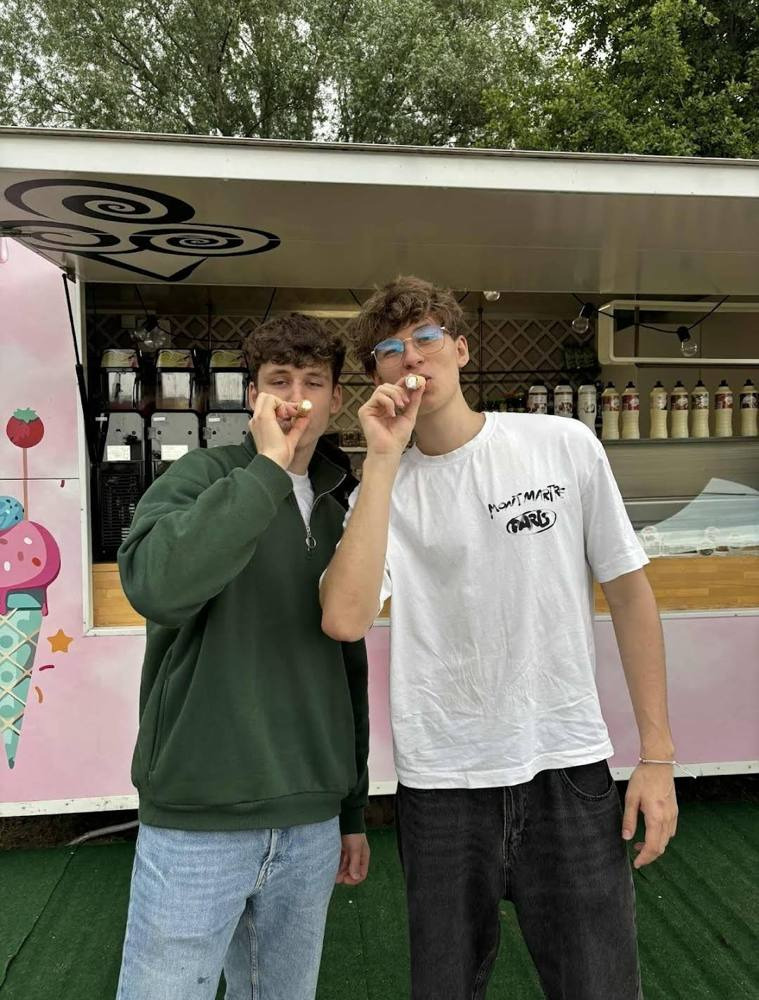
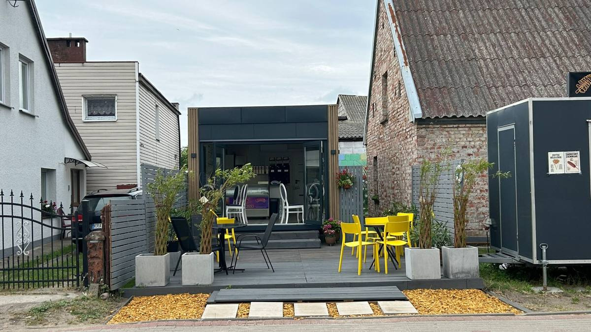
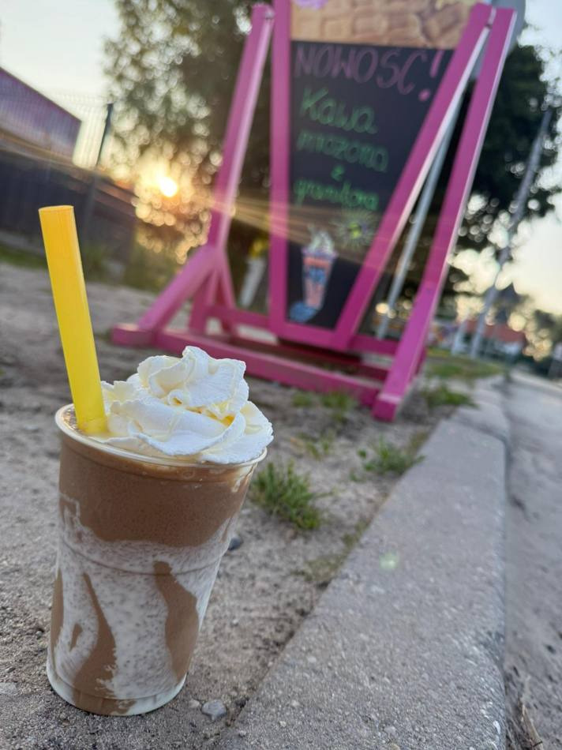
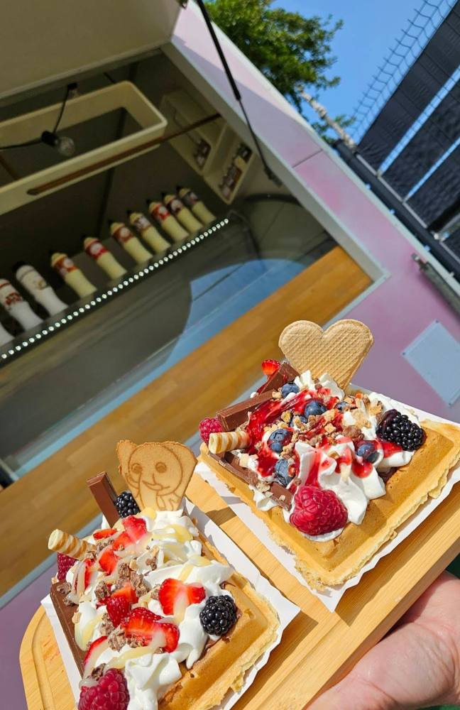
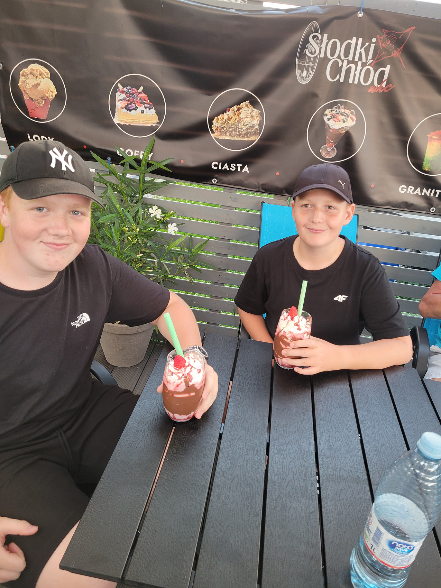
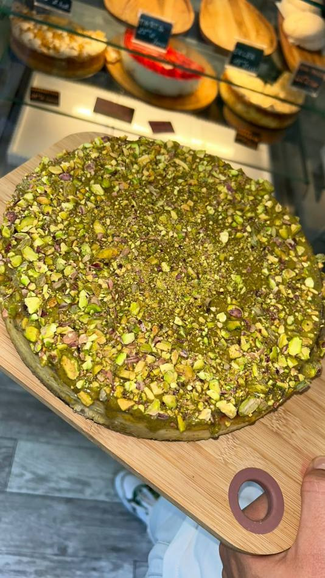

Nasza historia
Zaczęło się od jednej budki, jednej witryny z lodami i jednego sezonu nad zatoką.

Różowa budka w Mechelinkach
Miałem 19 lat, kiedy stanęła nasza pierwsza budka z lodami w Mechelinkach. Lody, granity i gofry na wynos, kilka stolików na trawie i wakacje, które nauczyły nas wszystkiego: jak zamawiać towar, jak trzymać kolejkę i co ludzie nad morzem naprawdę chcą jeść.
Własna kawiarnia w Rewie
Wzięliśmy kredyt i uderzyliśmy mocniej. Przy ul. Morskiej 32 w Rewie otworzyliśmy własną kawiarnię — z witryną na ciasta, ekspresem, piecem do gofrów, salą w środku i ogródkiem od frontu.
Ta historia wciąż się pisze
Nie wiemy, co przyniesie jutro — kolejny sezon, nowe smaki, może kolejne miejsce. Na razie robimy swoje, dzień po dniu, i cieszymy się z każdego kolejnego rozdziału. Resztę dopisze lato.
Nasza misja
Prowadzimy małe miejsce i to jest nasza przewaga. Możemy zrobić deser dokładnie tak, jak ktoś chce, doradzić smak i zapamiętać stałego gościa.
Pasja, nie etat
Sezon zaczynamy od pomysłów zapisanych zimą. Nowe desery testujemy sami, zanim trafią do witryny.
Kontakt z ludźmi
Najlepsza część tej roboty to rozmowy przy ladzie. Dzieciaki, rowerzyści, sąsiedzi, turyści z drugiego końca Polski — dla tego to robimy.
Świeżo i uczciwie
Wolimy zrobić mniej i lepiej. Ciasta pieczemy u siebie, gofr dopiero po zamówieniu, owoce krojone tego samego dnia.
Morze w środku
Wnętrze urządziliśmy po swojemu: koła sterowe, kotwice, drewno i światło od strony ogródka. Chcemy, żeby wchodząc do nas czuć, że jest się nad morzem, a nie w kolejnej sieciowej kawiarni.





Chcesz zobaczyć, co u nas dzisiaj? Wrzucamy to na bieżąco na Instagramie @slodkichlod.whc.